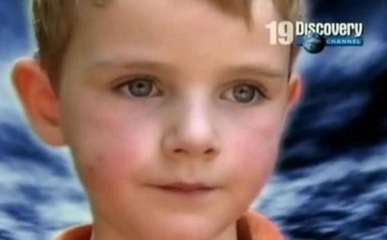

人死亡后会发生什么？我们会再回来吗？答案也许来自孩子——那些具有前世记忆的孩子们。坐落在夏洛特威尔斯小镇的美国弗吉尼亚大学里，科学家们正在研究那些声称轮回记忆的案例，他们花了四十年的时间，力图解读那些谈论前世
让我们跟随科学家们和摄制组，一起倾听那些保留前世记忆的孩子们的叙述，寻找轮回的证据。
“你小的时候，我是你父亲”
家在美国佛罗里达的伊安现年五岁，是个天真可爱的孩子。有一次他太调皮，妈妈玛丽亚说要揍他，不料他对妈妈说：“当你是个小女孩的时候，其实我是你父亲，可是我从不揍你。”玛丽亚吃了一惊。但是儿子反复说起自己以前是玛丽亚的父亲，他说自己以前是个警官，有一次在商店里遇到坏人，被坏人开枪打死了。他还说到了母亲小时候的很多事情。比如她小时候，父亲养有两只猫，一黑一白，黑的叫“疯子”（Maniac），白的叫“波士顿”（Boston）。有一次，伊安对妈妈说：“妈妈，你小的时候，我是你的父亲，那时候我的猫咪叫什么名字来着？”玛丽亚回答说：“疯子？”他说：“不，白色的那只？”玛丽亚说“波士顿。”伊安接过话来说：“我以前通常叫它波士（Bos），对吧。”母亲当时极为震惊：他不仅知道两只猫和它们的颜色，甚至父亲对猫的昵称他都知道，而这是别人都不知道的细节。当在伊安身上发生越来越多类似的故事时，她便不得不相信儿子就是父亲的
当节目组采访玛丽亚的时候，她还描述了一些很特别的线索：伊安一生下来六小时，就因为先天的心脏缺陷不得不接受一次心脏大手术。医生说他有先天性肺动脉瓣发育不全，造成了心脏右侧也发育不良。
玛丽亚回忆说，父亲原是纽约市警察。在伊安出世一年前，玛丽亚的父亲有一次在电器商店Radio Shack遇到抢劫案，被匪徒开枪击中，因公殉职。塔克博士和玛丽亚一起阅读了玛丽亚父亲的尸检报告，发现报告中说他死于枪伤造成的肺动脉破裂，这正是造成伊安先天病痛的同一个动脉。塔克博士说，其实这种现象在很多转世记录中都有，就是身体上一些先天的特殊胎记和色素沉积，甚至一些器官的先天缺陷，都与前生的创口或者意外有关。
当摄制人员采访五岁的伊安的时候，他坐在秋千上对妈妈说道：“我不想再回来了，可是上帝把我交给了你……”
“我的家不在这里”
冰岛大学的心理学教授额仑多。海若生（Erlendur Haraldsson）曾经在斯里兰卡对许多声称有前世记忆的孩子做过调研，他通过心理学测试和统计数据分析表明，这些孩子虽然比同龄人掌握更大的词汇量，而且往往智力发育也略微超前，但他们的心理特质和一般的孩子并无统计上的显著差异——除了一个例外的差异。那就是这些孩子往往都患有创伤后应激障碍（Post traumatic stress disorder，PTSD）。这种心理症状是指人在遭遇或对抗重大压力（生命遭到威胁、严重物理性伤害、严重的身体或心灵上的胁迫）后，其心理状态产生失调之后遗症。可是这些孩子们在这一生中并没有遭遇到重大危险或压力的经历。海若生教授认为，他们前世记忆中的死亡经历，正是造成他们创伤后应激障碍心理的最好解释。
海若生教授给摄制组提供了一个斯里兰卡的非常戏剧性的案例。
摄制组和海若生教授来到加姆珀哈区（Gamphaha district）的一个小镇维扬格达（Veyangoda），拜访尼桑卡（Nissanka）家。这家夫妇俩有一个女儿叫狄露茜。尼桑卡（Dilukshi Nissanka）。妈妈说狄露茜从不到两岁就开始不断重复说自己不是尼桑卡家的孩子，她相信自己“真正的家”在丹布拉（距离维扬格达一百多公里，位于斯里兰卡中部）。小时候她父母送她去一个庙宇办的幼儿园，她却说：“我的庙宇在另一个地方。”吃饭和睡觉前，孩子还是喋喋不休地谈论“真正的家”。父母以为女儿开玩笑，并没有相信她的话。但是女儿不断地重复，并说了那个
她会不会在编织幻想呢？海若生教授分析，一个孩子如果仅仅是幻想，她通常会幻想轻松、舒适的场景，没有人会喜欢幻想自己
但是尼桑卡夫妇无法阻止狄露茜不断要求寻找“真正的家”，最后他们不得不到丹布拉最著名的石庙（Rock Temple），和寺庙主持联系，因为狄露茜谈到过这个寺庙。他们询问主持是否知道有这样一个女孩被淹死了，其生活细节符合狄露茜的描述。可是主持表示记忆中并没有这样的一个女孩。不过主持把他们介绍给了他认识的一家报社记者。记者采访了狄露茜一家后，把这个故事登报发表了，其中包括狄露茜描述的“以前的生活”中各种细节。几天后，尼桑卡家收到一封来自丹布拉的一个村子的信，写信者达玛达撒。若纳汤加（Dharmadasa Ranatunga）读到报纸发表的故事后证实狄露茜回忆的前世死亡经历和他们死去的女儿西洛米（Shiromi）完全吻合，包括现场小河的周围景物。若纳汤加也想见见狄露茜。
狄露茜与父母坐车来到丹布拉的“家”。还没到村子，狄露茜便激动地描述村里的各种东西，甚至告诉司机如何开到“家”。父母很惊讶，因为她不可能到过这里。最后，狄露茜见到了前世父母、弟妹，顿时跪在地上痛哭流涕，两世重逢，父母们也悲喜交集，旁人无不被感染。狄露茜认出来自己从前用过的东西以及周围的邻居们。海若生教授注意到她在这个家里，性格也变了，原有的忧郁不见了，也不那么拘谨，在这里她似乎更加
后来狄露茜还带领海若生教授到达了她前世被淹死的地方，在一条小河边上，矗立着一块大石头，孩子们常在这里嬉戏，狄露茜说，自己前生就是在这里淹死的。
面对这些强有力的案例，科学家们表示必须认真考虑轮回转世的真实存在。但是进一步的问题却更加深邃：那么轮回转世本身又意味着什么呢？灵魂真的存在吗？这些对于我们现世的生活又有何意义？这都是值得每一个人去发掘和思索的！